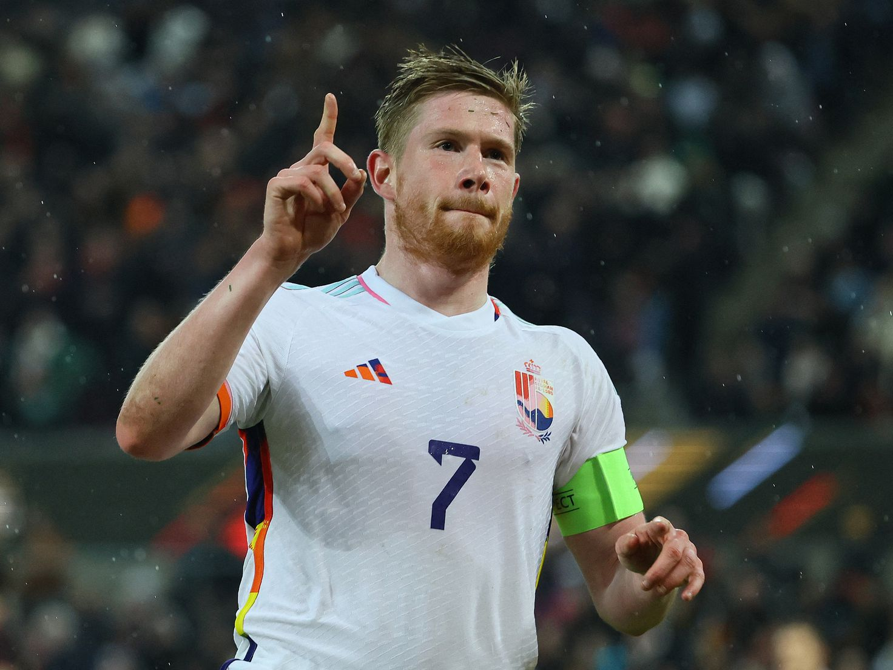

Resultados Recientes
Los ultimos resultados de los amistosos internacionales.
Argentina vencio a curazao 7-0 mientras que brasil no puedo contra un muy duro Marruecos.
La Selección campeona del mundo hizo vibrar a Santiago del Estero. Argentina aplastó a Curazao y le ganó por 7-0.
Es el interior. Está bien definido: el interior. Aunque eso para nada represente lo que el mapa articula porque ninguno de los cuarenta y seis millones de campeones del mundo está (estamos) afuera del país. Todos formamos parte. Pero la noche de Santiago por primera vez valida ese término: el interior. Es la embajada del sentimiento. Del palpitar de cada región que consiguió asegurarse un ticket en el coloso Madre de Ciudades.
Marruecos sorprendió a Brasil y festejó a lo grande
La Verdeamarela jugó mal y fue superada por los africanos, que ante su gente, ganaron 2-1 después del histórico cuarto puesto en el Mundial.
Brasil empezó el 2023 de muy mala manera. Marruecos lo invitó a su casa y le ganó 2-1 en un amistoso. Los africanos, que venían de un histórico cuatro puesto en la Copa del Mundo, festejaron a lo grande el reencuentro con su gente.
Argentina subio al primer puesto en el ranking mundial

La seleccion argentina subió a la cima del ranking FIFA por primera vez desde 2016, luego de la derrota de Brasil ante Marruecos del sábado
En un partidazo belgica derrotó a Alemania
Bélgica venció como visitante a Alemania por 3-2, en un partido amistoso disputado en Colonia. Los Diablos Rojos tuvieron fecha libre en las Eliminatorias para la Eurocopa, mientras que los germanos ya están clasificados por ser la sede del certamen que se desarrollará en 2024.
